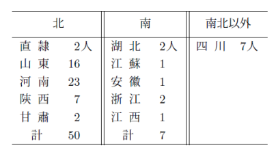
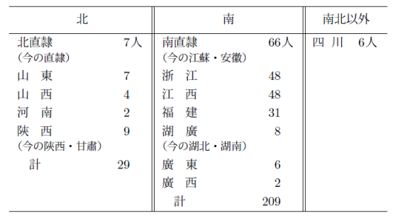

この論文を讀む人は、更に大正十四年十二月發行の『白鳥博士還暦記念東洋史論叢』中に收めた拙稿「歴史上より觀たる南北支那」を參照ありたい。
支那の古代に於ける漢族の根據地、從つて支那の文化の中樞は、北支那に限つたもので、南支那は全然無關係であつた。南北支那の區別は、必ずしも一定して居らぬが、大體より論じて、北支那とは主として黄河の流域地で、今の直隷・山西・山東・河南・陝西・甘肅の地に當るのである。南支那とは揚子江の流域、殊に主として江南の地を指すのである。今の地理でいへば、湖南・江西・浙江・福建・廣東・廣西諸省の地である。湖北・安徽・江蘇三省の地は、その大部は江北に在るけれども、勿論南支那の範圍に屬すべきものである。但この三省の北部殊に淮北の地は、むしろ北支那の色彩を帶びて居る事實を否定することが出來ぬ。
ドイツの Richthofen は古代に於ける漢族の發展に就いて、大要次の如き見解を下して居る（１）。
（１）漢族は所謂堯舜時代より遙か以前に於て、支那本部の地に移轉して來た。彼等の原住所は不明であるが、支那の古典の記事から推して、彼等が曾て甘肅西部の所謂河西地方に住居したことは疑を容れぬ。
（２）この河西地方から崑崙山脈の北麓に沿ひ、今の蘭州府（甘肅）鞏昌府（甘肅）等を經て、渭水の上流に出で、次第に東に進み、今の西安府（陝西）管下の平原へ來て、茲で彼等が中央アジアから將來した農耕を試むることとなつた。
（３）渭水の流域を占領した後ち、漢族は成るべく山地を避けて、灌漑の便利ある平地を選びつつ、尤も農耕に適當した方面に發展して往つた。この結果として、彼等は自然下の如き二つの方向をとることとなつた。
（２）この河西地方から崑崙山脈の北麓に沿ひ、今の蘭州府（甘肅）鞏昌府（甘肅）等を經て、渭水の上流に出で、次第に東に進み、今の西安府（陝西）管下の平原へ來て、茲で彼等が中央アジアから將來した農耕を試むることとなつた。
（３）渭水の流域を占領した後ち、漢族は成るべく山地を避けて、灌漑の便利ある平地を選びつつ、尤も農耕に適當した方面に發展して往つた。この結果として、彼等は自然下の如き二つの方向をとることとなつた。
（ａ）彼等は一方では黄河を越えて、汾水の下流より山西方面に向うた。
（ｂ）一方では彼等は黄河の流に沿うて、河南府（河南）附近の平原に出で、それから更に三方面に發展して往つた。その一は懷慶府（河南）を經て、黄河と太行山との間に沿うて北に進み、一つは伊水を溯つて、汝州（河南）南陽府（河南）を經て南に進み、一は東進して山東方面に出で、茲から北して黄河の下流地に發展し、又は南して淮水の流域から、次第に揚子江の下流に發展したことと思ふ。
漢族の原住地の問題はしばらく措き、古代の漢族が黄河流域の北支那を根據地として、發展して往つたことは、殆ど疑を容るる餘地がないのである。（ｂ）一方では彼等は黄河の流に沿うて、河南府（河南）附近の平原に出で、それから更に三方面に發展して往つた。その一は懷慶府（河南）を經て、黄河と太行山との間に沿うて北に進み、一つは伊水を溯つて、汝州（河南）南陽府（河南）を經て南に進み、一は東進して山東方面に出で、茲から北して黄河の下流地に發展し、又は南して淮水の流域から、次第に揚子江の下流に發展したことと思ふ。
漢族は夙に自らその四隣の異族と區別して、夏と稱し、又は諸夏・中夏・華夏・中華・中國等と稱して、彼等自身の優秀を誇り、高く標置して居つた。當時謂ふ所の中國若くば中夏とは、今の河南・山東の大部、直隷・山西の南部、陝西の一部に過ぎぬ。彼等はこの以外の國若くば人を、戎狄若くば蠻夷として擯斥もし輕侮もした。當時南支那に國して居つた荊楚・句呉・於越の諸王は、自らその蠻夷たることを認めて、鋭意北方の文化を輸入することを圖つたのである。
春秋の末より戰國にかけて、支那の學術は勃興したが、その重なる學者は、殆ど皆北支那の産である。しばらく孔門の諸弟子に就いて之を觀ても、勿論魯人最も多く、衞人・齊人・宋人之に次ぐ、皆北支那の人である。呉・楚の産は僅々數輩に過ぎぬ。『史記』には子游を呉人と記してあるけれど、そは頗る疑はしい（２）。公孫龍・任不齊・秦商の三人は、或は楚人となす者もあるけれど、皆後世の説で、一層信憑するに足らぬ。この四人を除くと、濟々たる孔門の諸弟子中、殆ど一人も南支那の産はないのである。或は儒家の學を齊魯の學と稱へて、北方思想を代表するものとし、道家の學を荊楚の學と呼び、南方思想を代表するものとして、春秋戰國の交、早く已に南北支那の文化が相頡頏すべき状況にあつたかの如く論ずる學者もあるが、こは

秦の始皇帝が六國を統一して、南方經營に着手して以來、呉・越の故地は固より、遠く
西漢時代には山東出レ相、山西出レ將といふ語がある（４）。東漢時代にも、關西出レ將、關東出レ相といふ諺がある（５）。是に謂ふ所の山東・山西は華山を基點として定めた名稱で、函谷關を基點として定めた關東・關西と、ほぼ同一の意義をもつて居る（６）。要するに兩漢時代の文武の名士は、北支那の産に限つたものである。
西漢の高祖は沛から起つた。從つて西漢時代の卿相は、

 二州の人物が多い。東漢時代には光武帝の故郷である南陽出身の大臣が多い。
二州の人物が多い。東漢時代には光武帝の故郷である南陽出身の大臣が多い。 禹
禹兩漢時代に北塞南徼の外に偉功を建てた人物も亦北支那の産が多い。張騫・李廣・蘇武・趙充國・甘延壽・傅介子・段會宗・馬援・班超・班勇・梁※［＃「りっしんべん＋槿のつくり」、U+616C、140-5］など、何れも所謂關西の産である。
兩漢の學問といへば儒學に限るが、その儒學者中にも南支那人は餘り見當らぬ。經學の傳統をたづねると、易は六家に分れて居るが、施氏易の施讎（沛）、孟氏易の孟喜（東海）、梁丘氏易の梁丘賀（琅邪）、京氏易の京房（東郡）、費氏易の
孟子は楚人を南蠻
然るに晉室の南渡は、この南北の文野の區劃に、大なる變動を生ぜしむる原因となつた。殺伐野蠻な塞外種族が、古來漢族の根據地であつた北支那を占領して、茲に三百年間、優勝者の權力を振ひ、漢族の天子はその大官貴族の多數と共に、南支那に移住するといふ一大事變が、支那文化の中樞に大變動を及ぼすべきは、冒頭より期待することが出來る。
塞外種族の北支那へ移住し、若くば歸化し來たものは、兩漢・三國・西晉時代にかけて、決して少數ではなかつた。西晉時代には一時に十萬以上の大衆の移住歸化も稀有でなかつた。西北方面の州郡では、戎狄と漢族と居民相半する有樣さへあつた。西晉の太康元年に郭欽、元康九年に江統、相前後して
所が今や此等の塞外種族が、被治者として雜居するではなく、堂々と實力によつて北支那を占領して、漢族を統治することとなつたのである。勿論晉室が南渡しても、漢族の多數は依然北支那に住んで居る。北支那の主權が匈奴・羯・鮮卑・
 ・羌と移轉しても、漢族の人材は何れの種族にも登庸された。併し要するに彼等は劣敗者である。被治者である。衣冠の華族すら胡人の陵侮を免れ得れば幸とする世の中であつた（12）。彼等の多數は漢狗とか一錢漢とかいふ侮辱を甘受せなければならなかつた（13）。漢狗とは狗同樣の漢人といふ意味で、一錢漢とは一文奴の漢人といふ意味である。かくて塞外種族の大臣大將の下に、日一日と塞外の風氣が北支那に浸潤彌蔓するのは、自然の勢といはねばならぬ。
・羌と移轉しても、漢族の人材は何れの種族にも登庸された。併し要するに彼等は劣敗者である。被治者である。衣冠の華族すら胡人の陵侮を免れ得れば幸とする世の中であつた（12）。彼等の多數は漢狗とか一錢漢とかいふ侮辱を甘受せなければならなかつた（13）。漢狗とは狗同樣の漢人といふ意味で、一錢漢とは一文奴の漢人といふ意味である。かくて塞外種族の大臣大將の下に、日一日と塞外の風氣が北支那に浸潤彌蔓するのは、自然の勢といはねばならぬ。之に反して南支那は、その間、終始漢族の天子を戴いた。漢族の士民も亦尠からず、晉室と共に南に移つた。或は兵力を以て強逼されて、本意ならず移つたものもある。江淮以南の地、到る處に僑郡又は僑縣を建てて、茲にこれら新來の北人を安插した。殊に王氏・謝氏を始め、中國の名族甲姓は、多く亂を避けて江南に徙り、當時のいはゆる
南北朝對立の際、南朝は北朝を指して索虜といひ、北朝は南朝を斥けて島夷といひ、互に誹詆を逞くして正閏を爭うた。正閏如何の問題は別として、公平に批判すると、北朝は地は中原を占めて、人は
冠冕君子、南方爲レ優。閭里小人、北方爲レ愈。
と評して居る（15）。こは主として言語音韻に就いて下した評ではあるが、推して一般にも應用することが出來ると想ふ。當時北土の民間には、猶ほ漢族多數で、その風尚は南方呉越の民衆に優つて居つたが、南朝の卿相は漢族の甲姓で、その應對は遙に北朝の高官――多くは塞外種族の出身たる――に優つて居つたのである。晉の南渡後、隋の統一に至るまで、約三百年の間、北支那と南支那と相對立して、文藝・學術・風尚その他萬端に渉つて、顯著なる相違を表はして居る。
先づ『顏氏家訓』や『南史』『北史』等を材料として當時の南北の風尚を比較すると、南方では
次に當時の經學界を見渡すと、北人は訓詁を重んじ、南人は義理を重んずる。北人は東漢の舊學を承け、南人は魏晉の新學を承けた。北朝では易は鄭玄の註を採るが、南朝では王弼の註を採つた。書では北朝は鄭玄の註を用ゐたが、南朝は孔安國の註を用ゐた。左氏傳は北朝は服虔の註に循うたが、南朝は
南人約簡得二其英華一。北學深蕪窮二其枝葉一。
と評して居る（16）。この評の當否は兎に角、唐の太宗の貞觀十四年に、南北の書道にもその間に看過すべからざる相違がある。南朝の書風はすべて婉麗清雅で、北朝は概して痩硬古樸、各
 その特徴を備へて居るけれど、北朝には遂に王羲之・王獻之父子に當り得る程の大立者がない。
その特徴を備へて居るけれど、北朝には遂に王羲之・王獻之父子に當り得る程の大立者がない。 に腐心するに比しては、一體に及ばざること遠しといはねばならぬ。唐宋の學者の書道を論ずる者、皆南に厚くして北に薄いのは、必ずしも各自の嗜好に佞する結果とのみは斷じ難い。李唐の世となり、太宗が王羲之を尊崇して以來、書道に於ても南派は北派を壓倒することとなつた（17）。
に腐心するに比しては、一體に及ばざること遠しといはねばならぬ。唐宋の學者の書道を論ずる者、皆南に厚くして北に薄いのは、必ずしも各自の嗜好に佞する結果とのみは斷じ難い。李唐の世となり、太宗が王羲之を尊崇して以來、書道に於ても南派は北派を壓倒することとなつた（17）。文詞に就いても南北の間に好尚の異同がある。南人は文華を尚び、北人は質實を尚ぶ。各
得失はあるが、齊・周以來、南朝輕綺の文體次第に北に流れて、隋唐の際に行はれた。この點に於ても、北人は南人に一籌を輸して居るといはねばならぬ（18）。南北の音樂を論ずると、南には呉楚の聲多く、北には胡虜の音多い。等しく純正を缺くとしても、北樂に比して南樂は遙に優つて居つた。西晉の末、洛陽・長安の陷落した時、伶官樂器は匈奴に入り、一時中國傳來の雅樂は失はれたけれども、江東の新朝廷の不斷の努力によつて、次第に遺工逸樂を採拾し、殊に
 水の戰勝と共に、西晉・漢・趙・燕・前秦と傳へて來た樂工を獲て、廟堂の雅樂大に備つたのである（19）。隋の文帝が陳を平げて後ち、南朝の樂を耳にして、華夏正聲也と嘆美したのは、誠に故あることと思ふ。隋及び唐の音樂は、大體に於て、南北を併せたものではあるが、その雅樂は、畢竟南朝の雅樂であるから、音樂に於ても南が北に勝つた譯である（20）。
水の戰勝と共に、西晉・漢・趙・燕・前秦と傳へて來た樂工を獲て、廟堂の雅樂大に備つたのである（19）。隋の文帝が陳を平げて後ち、南朝の樂を耳にして、華夏正聲也と嘆美したのは、誠に故あることと思ふ。隋及び唐の音樂は、大體に於て、南北を併せたものではあるが、その雅樂は、畢竟南朝の雅樂であるから、音樂に於ても南が北に勝つた譯である（20）。永嘉以來三百年間、中原と江南と界を限り、各自の文化を有して相對抗したが、結局は南方の學術・文藝が勝利を博したのである。南方文化の勝利、こは確に破天荒の事變といはねばならぬ。
南北支那の文化發達の迹を達觀すると、明に三大時期に分つことが出來る。魏晉以前は北支那の文化が遙に南支那を壓した時代で、明清以後は南支那の文化が遠く北支那を壓した時代である。試に『後漢書』の儒林・文苑の二傳に、專傳をもつて居る六十四人――材料としては聊か不充分で、又不適當かも知れぬが――を本として、東漢二百年間に於ける人材分布の樣子を、今の地理に當てて調査すると、上の如き結果を生ずる。

即ち北五省に産した人材は、南五省に産した人材の七倍以上に當つて居る。當時北方の文化が南方を壓した明證である。
飜つて『皇明通紀』の第十三卷に收めてある、會元（京師で擧行する會試の首席合格者）三及第（殿試の最優等者、すなはち状元・榜眼・探花の三人）總考を根據として、明の洪武四年より萬暦四十四年に至る二百四十五年間に出た、會元及び三及第者の總數二百四十四人――この統計は幾分不正確かも知らぬが――に就いて、當時の人材分配の状況を觀ると、全然趣を異にしてゐる。

すなはち南方の人材は北方のそれに比して七倍以上に當つてゐる。北支那は最早明かに南支那の敵ではない。
漢の司馬遷が、
夫齊魯之閑二於文學一、自レ古以來其天性也（21）。
と評したのは、魏晉以前に於ては事實であるが、明以後には通用せぬ。清の乾隆帝は之に反して、江浙爲二人文淵藪一（22）。
と評して居るが、こは明清時代には動かすべからざる事實で、然も魏晉以上には適當せぬ。要するに支那近代の學術について論ぜば、北は遠く南に遜り、古代の學術に就いて論ぜば、南は遠く北に遜る。是が山にも比すべき斷案である（23）。支那の歴史は一面より觀れば、漢族の文化の南進の歴史ともいへる。魏晉以前は支那文化の中樞は北支那に在る。明清時代には南支那に在る。この間判然と鴻溝を劃して居る。魏晉以後の一千年は、正しくこの支那文化の中樞の移動する過渡期である。この過渡の門戸を開いたのが、晉室の南渡である。晉室南渡の最大意義は斯に存することと想ふ。
參照
（１）Richthofen; China, Bd. I. s. 340-342.
（２）清の崔述の『崔東壁遺書』泗洙考信餘録
（３）『經史説林』所載、岡田正之氏の「支那の古代に於ける南北思想説に就きて」
（４）『漢書』卷六十九趙充國傳贊
（５）『後漢書』卷八十八虞 傳
傳
（６）清の顧炎武の『日知録』卷三十一
（７）『孟子』滕文公上
（８）『史記』卷之七項羽本紀
（９）『資治通鑑』卷八十五晉紀七
（10）『後漢書』卷八十三徐穉傳
（11）『晉書』卷七十一陳※［＃「君＋頁」、U+9835、147-11］傳
（12）『資治通鑑』梁紀十三陳紀五
（13）『晉書』卷百五石勒傳下
（14）『資治通鑑』卷一百一晉紀二十三
（15）『顏氏家訓』音辭篇
（16）『隋書』卷七十五儒林傳
（17）清の阮元の『※［＃「研／手」、U+63C5、147-17］經室集』三集卷一所載、「南北書派論」
（18）『隋書』卷三十五經籍志四
（19）『資治通鑑』卷一百五晉紀二十七
（20）『舊唐書』卷二十八音樂志一
（21）『史記』卷百二十一儒林傳
（22）『史學雜誌』第十三編九號所載、市村博士の「四庫全書と文淵閣とに就いて」に引く所の乾隆帝四十七年七月の上諭
（23）『國粹學報』第一年學篇所載、清の劉光漢の「南北學派不同總論」
（１）Richthofen; China, Bd. I. s. 340-342.
（２）清の崔述の『崔東壁遺書』泗洙考信餘録
（３）『經史説林』所載、岡田正之氏の「支那の古代に於ける南北思想説に就きて」
（４）『漢書』卷六十九趙充國傳贊
（５）『後漢書』卷八十八虞
傳（６）清の顧炎武の『日知録』卷三十一
（７）『孟子』滕文公上
（８）『史記』卷之七項羽本紀
（９）『資治通鑑』卷八十五晉紀七
（10）『後漢書』卷八十三徐穉傳
（11）『晉書』卷七十一陳※［＃「君＋頁」、U+9835、147-11］傳
（12）『資治通鑑』梁紀十三陳紀五
（13）『晉書』卷百五石勒傳下
（14）『資治通鑑』卷一百一晉紀二十三
（15）『顏氏家訓』音辭篇
（16）『隋書』卷七十五儒林傳
（17）清の阮元の『※［＃「研／手」、U+63C5、147-17］經室集』三集卷一所載、「南北書派論」
（18）『隋書』卷三十五經籍志四
（19）『資治通鑑』卷一百五晉紀二十七
（20）『舊唐書』卷二十八音樂志一
（21）『史記』卷百二十一儒林傳
（22）『史學雜誌』第十三編九號所載、市村博士の「四庫全書と文淵閣とに就いて」に引く所の乾隆帝四十七年七月の上諭
（23）『國粹學報』第一年學篇所載、清の劉光漢の「南北學派不同總論」
（大正三年十月『藝文』第五年第一〇號所載）